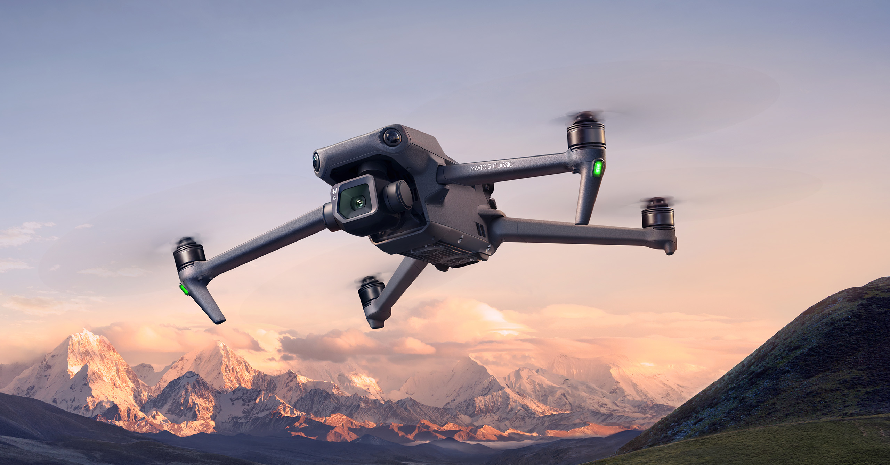

Drone
Prijs: €249,99
Een drone is een vliegende robot die wordt gebruikt voor fotografie, inspecties, onderzoek en het verkennen van moeilijk bereikbare gebieden.
Drones worden tegenwoordig gebruikt in veel verschillende sectoren, zoals landbouw, bouw en hulpverlening. Dankzij hun camera's kunnen ze snel informatie verzamelen vanuit de lucht.
Moderne drones beschikken over gps-systemen en sensoren waarmee ze veilig kunnen vliegen en beelden kunnen verzamelen voor analyse en onderzoek.

Robot Arm
Prijs: €199,99
Een robotarm wordt gebruikt om objecten op te pakken, te verplaatsen en nauwkeurig werk uit te voeren. In fabrieken kunnen robotarmen dezelfde taak duizenden keren achter elkaar uitvoeren zonder moe te worden.
De geschiedenis van de robotarm begon in de jaren 50. Een van de eerste industriële robots was de Unimate. Deze robot werd gebruikt in autofabrieken om gevaarlijke en zware taken uit te voeren.
Tegenwoordig worden robotarmen gebruikt in fabrieken, ziekenhuizen, laboratoria en zelfs ruimtevaartprojecten. Moderne robotarmen kunnen zeer nauwkeurig werken en worden vaak aangestuurd door geavanceerde software.